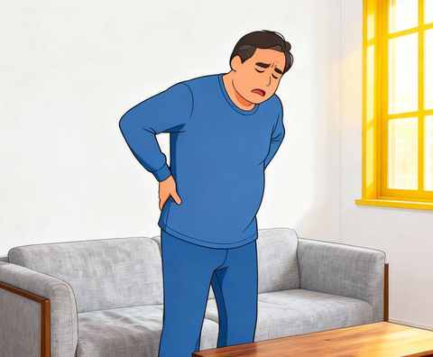
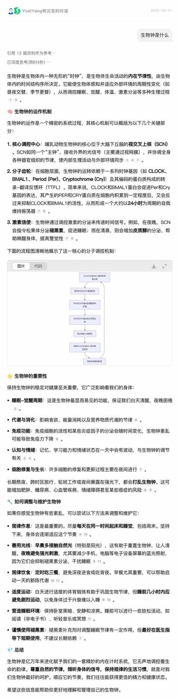
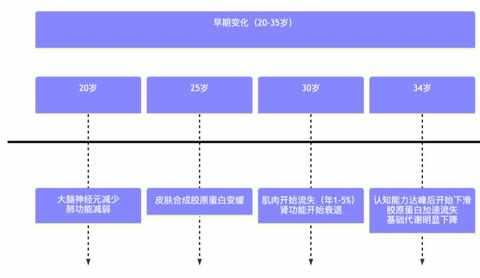
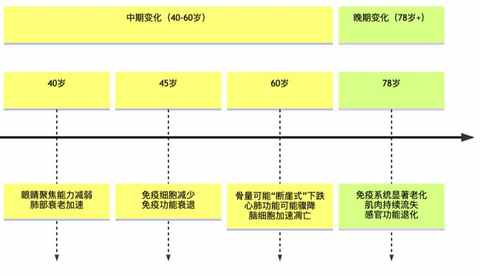
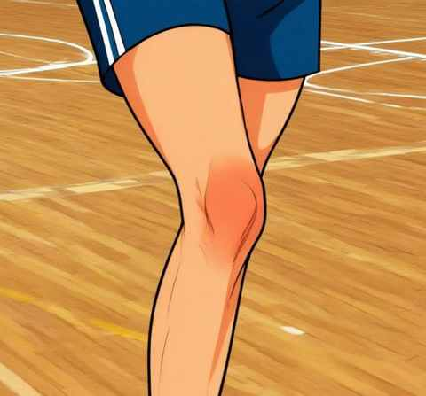
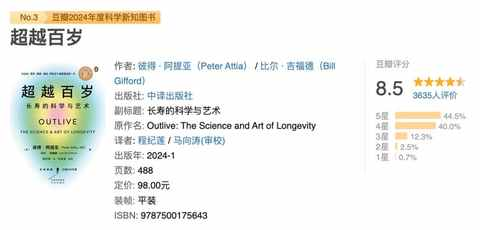

一个事实：人到中年，才会不断去认识自己的身体！
一、契机
年龄所带来的身体变化，是一个绝佳的契机，种种不适就等同于是身体的表达。
人到中年，不可能抵抗的就是身体机能的下滑，随着年龄的渐长反而会增加自己感知身体的能力。
这里酸、那里疼、肠胃不适、消化不良、体力差、睡不好醒的早……等等诸多状况可能会纷至沓来，也有可能像约好似的在你的身体里团建。
这些变化都 提醒 一个事实：
身体与生活习惯的不匹配！

旧的习惯必须被打破，要依据当时的身体情况做调整形成新习惯。
拿生物钟做例子：
以前：必须设置
如果第二天有什么重要的事情，也会在睡前确认下闹钟的时间，有时候还会多设置几个，就怕哪天忘记设置闹钟可能就真的耽误事情了
现在：睡前从不检查闹钟
有超过 50% 的概率会在闹钟响之前醒来，神奇的生物钟把闹钟的活抢咯。

二、逆水行舟，不进则退
身体机能会随着年龄下滑，但其过程是线性的，是可控的。

学如逆水行舟，身体机能更是如此，不进则退的具体表现是：如果不去锻炼身体，不去调整生活习惯便只能随波逐流，越往后越不可逆，进而失去对身体的主动权。

三、信号
与考试中的错题类似，身体的不良反应是一个个信号，在不断指引你去找到问题出现的原因，然后调整并解决问题。
有些问题是单点的，有些是多点的，有些是系统性的。解决难题的过程中也会不断加深对身体的认识。
例如。前几年打完篮球之后习惯有酸胀感：

从刚开始持续 1-2 天到后面 3-4 天，果断买了护膝稍有缓解，但依然时不时有酸胀感。
减重之后彻底没有这个问题，护膝快两年没戴，都不知道放哪儿了。
四、学习与实践缺一不可
认识身体的方式：必须把学习与实践结合在一起，两者缺一不可。
① 用两本书指导实践
《你是你吃出来的》
能指导你如何吃得更营养、均衡、健康。
《超越百岁》
作者用大量的数据和研究告诉你，活到一百岁是有很大可能的，前期是得先养成健康的生活习惯。

② 找一个愿意坚持做的运动
虽然公园的老大爷拿头撞树很离谱，但不可否认的是这是一项运动，而且他愿意做，从某种角度做的还挺好。
找到一项适合自己的运动方式尤为关键，借助各种 APP，遍历各类自媒体博主的内容之后，你总能找到自己喜欢的那一个。